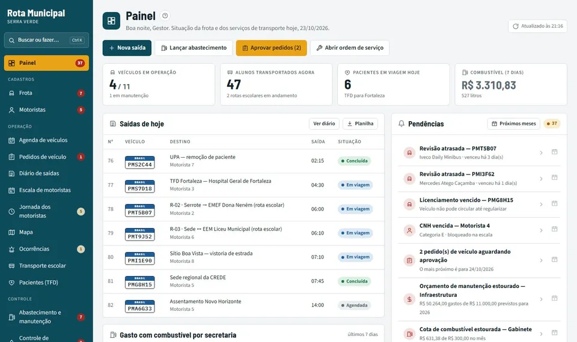

Full system
Rota Municipal
Transportation management system for city halls: fleet, drivers, school buses, patient transport, fuel and maintenance. It has role-based access, audit logs, accountability reports and a driver app that works offline in rural areas.
Private code. The presentation uses fictional data.